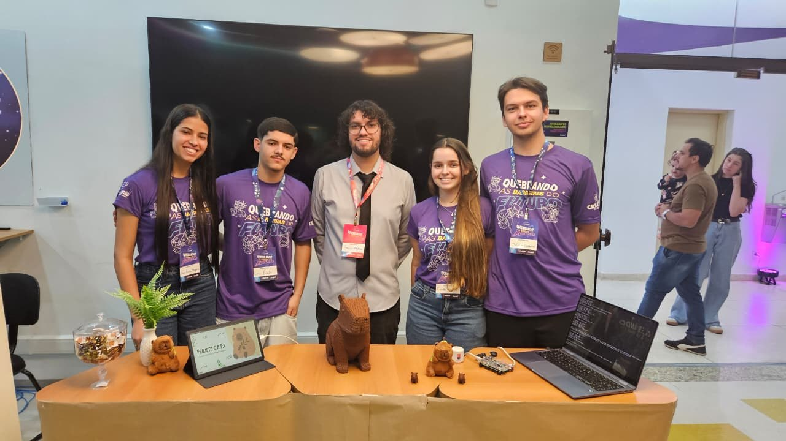
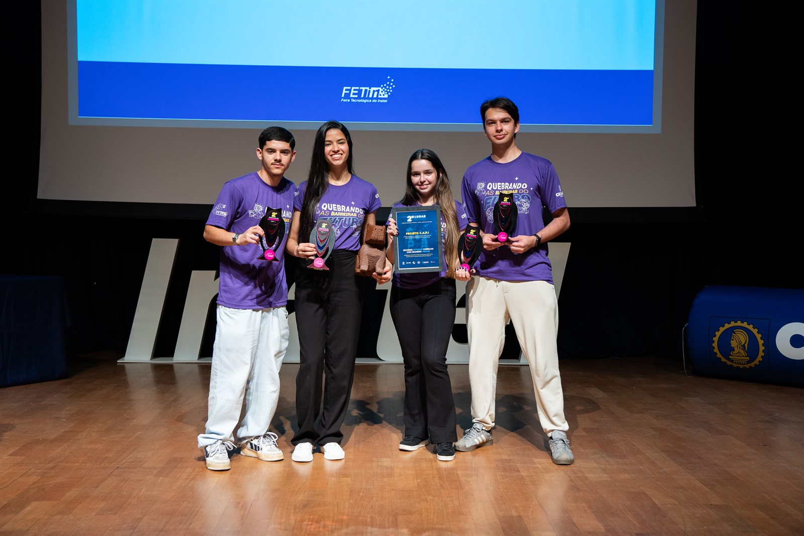

FETIN 2026 · Projeto premiado
CAPI.
Condutor Autônomo de Passeios Interativos
Robô-guia que apresenta a história de Sinhá Moreira e conversa com o público em tempo real.
Ouça a voz do robô
Abertura da apresentação (16 s), sintetizada com edge-tts na voz pt-BR-AntonioNeural.
Premiações
🥈
2º lugar — Viabilidade de Mercado
FETIN 2026
🥈
2º lugar — Inovação Turística
Desafio Inovação Turística · Prefeitura de Santa Rita do Sapucaí
Galeria


Sobre o projeto
O CAPI segue um roteiro de dois blocos sobre Sinhá Moreira, abre para dúvidas do público e responde com uma base de conhecimento histórica — sem inventar. Roda em Raspberry Pi, com reconhecimento de voz, API da DeepSeek e voz neural.
Projeto encerrado e mantido como documentação técnica. As chaves de API foram revogadas.